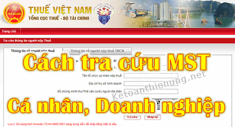
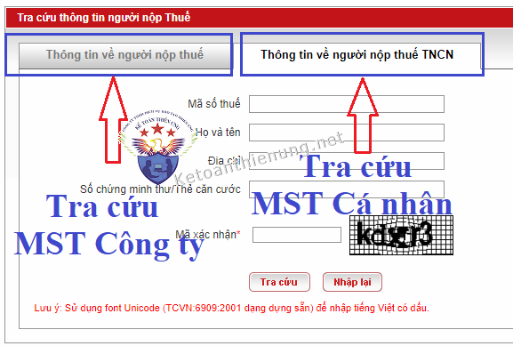
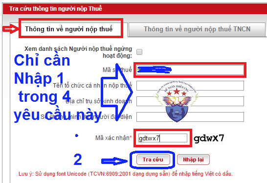
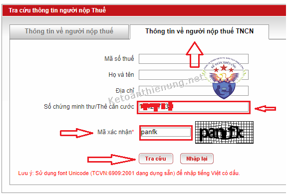

Hướng dẫn cách tra cứu mã số thuế Công ty; Cách tra cứu mã số thuế cá nhân online nhanh nhất: Tra cứu MST cá nhân theo CMND, tra cứu xem Doanh nghiệp bỏ trốn hay đang hoạt động, xem cá nhân đó đã có MST cá nhân hay chưa ...

Lưu ý: Bài viết này Kế toán Diệu Tâm hướng dẫn cách tra cứu MST cá nhân, MST Doanh nghiệp. -> Còn việc tra cứu MST người phụ thuộc hiện tại chưa tra cứu được nhé (khi nào Tổng cục thuế hướng dẫn, Kế toán Diệu Tâm sẽ hướng dẫn nhé).
-> Nếu bạn đăng ký người phụ thuộc và muốn tra cứu kết quả MST người phụ thuộc thì có thể xem tại đây nhé: Cách đăng ký người phụ thuộc
- Và hiện tại cũng không tra cứu MST cá nhân hàng loạt được nhé, chỉ tra cứu MST từng người thôi nhé.
---------------------------------------------------------------------
Hướng dẫn tra cứu mã số thuế cá nhân, Công ty online qua mạng:
Bước 1:
- Truy cập vào website của Tổng cục thuế:
Bước 2:
- Lựa chọn thông tin muốn tra cứu:
+ Muốn tra cứu MST doanh nghiệp.
+ Muốn tra cứu MST thu nhập cá nhân.
-> Thì các bạn lựa chọn như sau:

----------------------------------------------------------------
Bước 3:- Các bạn chỉ cần nhập 1 trong 4 yêu cầu thôi nhé (Không cần thiết phải nhập đầy đủ cả 4 yêu cầu)
VD: Bạn muốn tra cứu xem Doanh nghiệp đó tình trạng như nào (Đang hoạt động hay bỏ trốn)
-> Chỉ cần nhập: Mã số thuế của Doanh nghiệp đó vào.

- Hoặc nhập: Tên tổ chức cá nhân nộp thuế (Nếu là DN). Họ và tên (Nếu là cá nhân)
- Hoặc nhập : Số chứng minh thư người đại diện (Nếu là DN). Số chứng minh thư (Nếu là cá nhân)
VD: Bạn muốn tra cứu xem nhân viên A có MST hay chưa:
-> Chỉ cần nhập: Số CMND của nhân viên đó.

- Sau khi nhập xong thì các bạn nhập : Mã xác nhận (Đây là yêu cầu bắt buộc)
- Tiếp đó ấn phím : Tra cứu.
Lỗi: Trường hợp các bạn không tra cứu được, các bạn có thể thử trên trình duyệt khác như: Intetnet Explorer nhé.
------------------------------------------------------------------------
Bước 4:
- Kiểm tra xem DN (hoặc cá nhân) còn hoạt động hay không:
a, Nếu là Doanh nghiệp:

b, Nếu là cá nhân:

=> Như này là cá nhân đó đã có MST cá nhân (ko thể đăng ký MST cá nhân mới)
Xem thêm: Cách đăng ký mã số thuế cá nhân qua mạng
----------------------------------------------------------------------------------
- Kiểm tra các thông của DN (cá nhân) mà các bạn cần :
- Màn hành sẽ hiện thị toàn bộ các thông tin của DN (cá nhân)
a, Nếu là doanh nghiệp:

b, Nếu là cá nhân :

----------------------------------------------------------------------------------------
Kế toán Diệu Tâm xin chúc các bạn thành công!
Nếu bạn muốn đi học kê khai thuế GTGT, TNCN, Quyết toán thuế TNCN, TNDN ... kỹ năng quyết toán thuế ... Có thể tham gia lớp học kế toán thuế thực tế chuyên sâu.
----------------------------------------------------------------------
Nếu bạn muốn đi học kê khai thuế GTGT, TNCN, Quyết toán thuế TNCN, TNDN ... kỹ năng quyết toán thuế ... Có thể tham gia lớp học kế toán thuế thực tế chuyên sâu.
----------------------------------------------------------------------